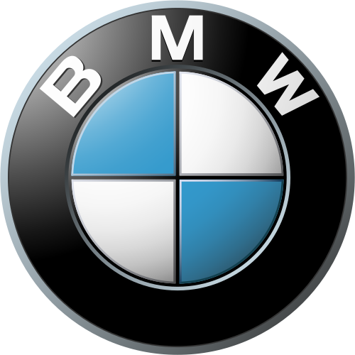
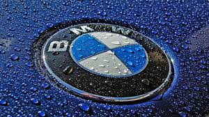
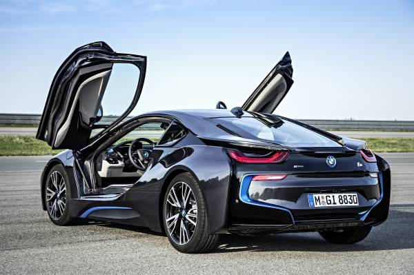

A MAXIMA VELOCIDAD!! MI AMOR POR BMW |
| QUE ES BMW? | Aquí tienes un resumen más conciso de qué es BMW:BMW, siglas de Bayerische Motoren Werke (Fábricas Bávaras de Motores), es un fabricante alemán de automóviles y motocicletas de lujo fundado en 1916. Inicialmente crearon motores de aviación, pero tras la Primera Guerra Mundial, se dedicaron a las motocicletas y, posteriormente, a los coches. Son conocidos por su ingeniería de alta calidad, rendimiento y diseño sofisticado. El Grupo BMW también es propietario de las marcas MINI y Rolls-Royce. Actualmente, están fuertemente enfocados en la innovación y la electromovilidad, con una creciente línea de vehículos eléctricos e híbridos. |
 |
| PORQUE ME GUSTA LA MARCA BMW? | La marca de carros BMW me gusta principalmente por el diseño que tiene cada uno de sus vehículos ya que son de alta gama y lujo, más bien la marca es de los principales fabricantes del mundo de los automóviles y motocicletas premium, teniendo un gran enfoque en la sostenibilidad y calidad de sus vehículos. |  |
| CUAL ES MI AUTO FAVORITO? | Mi auto favorito de la marca BMW es el BMW i8, ya que es un auto deportivo e híbrido. | |
| PORQUE ME GUSTA ESTE AUTO? | Este modelo me cautiva por su innovadora combinación de deportividad y eficiencia al ser un vehículo híbrido. Su diseño futurista y aerodinámico, con puertas de ala de gaviota, lo distingue de cualquier otro coche en la carretera. El BMW i8 ofrece una experiencia de conducción emocionante gracias a su motor eléctrico y de gasolina que trabajan en conjunto para proporcionar una aceleración impresionante y un manejo ágil. Además, su bajo consumo de combustible y bajas emisiones lo convierten en una opción responsable con el medio ambiente. La tecnología incorporada en el i8, como el sistema de navegación inteligente y la pantalla de visualización frontal, añade un toque de lujo y modernidad a la experiencia de conducción. En resumen, el BMW i8 representa la perfecta fusión entre rendimiento, diseño vanguardista y conciencia ecológica, lo que lo convierte en mi elección predilecta dentro de la gama BMW. |  |
| COMO ME EMPEZARON A GUSTAR LOS AUTOS EN GENERAL? | Me gustan los autos en general porque son una increíble combinación de ingeniería, diseño y libertad.Representan el ingenio humano en su máxima expresión, transformando metal y tecnología en máquinas que nos permiten explorar y conectar. Además, ofrecen una sensación de autonomía y aventura que pocas otras cosas pueden igualar. |
 |
PORQUE ES MI ASPIRACION COMPRAR ESTE AUTO? |
Compraría un BMW i8 por su diseño futurista y atemporal, que sigue siendo impactante hoy en día. Además, como un híbrido enchufable, ofrece una experiencia de conducción deportiva y eficiente, combinando un motor de gasolina con un motor eléctrico.Es un coche que destaca por su innovación tecnológica de su época y por su carácter de coche de colección, ya que su producción finalizó en junio de 2020. Esto lo convierte en una pieza interesante para quienes buscan algo único y con potencial de valor. |
 |